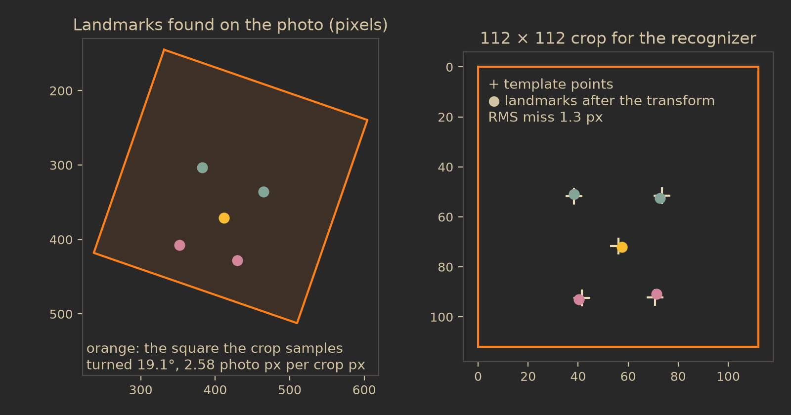
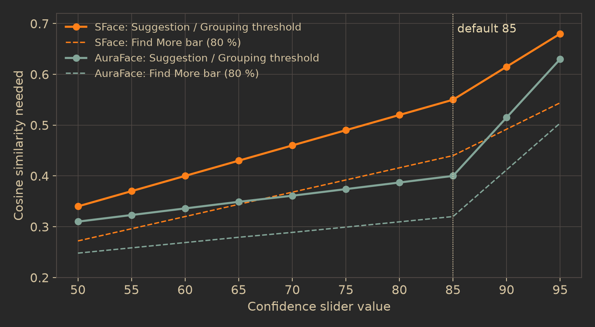

People
How Dalíca finds faces, turns each one into a list of numbers, groups the faces you have not named and suggests names for them, all on your own computer. Knowing the machinery tells you what the confidence sliders really change, why a suggestion appears or not, and exactly which files hold your face data.
Five rules behind the design
Face recognition touches the most personal data in a photo library, so the feature is built around a few rules that the code enforces rather than merely promises:
- Nothing leaves the machine. Detection, recognition, grouping and suggestions run on your CPU. No photo, face crop, embedding, name or count is sent anywhere. The only network request the feature ever makes is a model download you started and agreed to.
- Nothing is bundled. No model weights ship with Dalíca, its source repository or its release packages. A build check rejects
.onnxand other weight files in the repository. - Nothing is named for you. A suggestion is only a label until you confirm it. The thresholds are tuned so that leaving a face unnamed is preferred over naming it wrongly.
- Pure Rust, and a model file is hostile input. The neural network interpreter is Dalíca's own Rust code, with no C, no assembly and no
unsafe. A model file is checked against hard limits before it runs, like any other file Dalíca reads. - Faces are your data; embeddings are a cache. Which rectangle is which person lives in the folder sidecars next to your photos. The numbers the recognizer computes are derived data that can be thrown away and rebuilt.
The face pipeline
Every photo goes through the same chain: find the faces, line each one up the way the recognizer expects, and turn it into a vector of numbers. Everything after that (grouping, suggestions, Find More) is arithmetic on those vectors.
The picture the detector sees
Each photo is decoded upright (its EXIF orientation applied) and unedited, at the smallest size whose long side covers 2048 pixels. A RAW file is read through its embedded preview, a JPEG uses the decoder's DCT scaling so the full image is never expanded, and a video is read through the poster frame its thumbnail shows. Because detection always looks at the uncropped original, your crops and edits never change which faces exist, and the rectangles stay valid however you turn the photo later: they are stored in the upright frame, before Dalíca's own rotations and flips.
Detection with YuNet
The detector is YuNet (version 2023mar), a small network of about 232 KB. Its input is a 640 × 640 square, so the 2048 px picture is letterboxed into it: scaled with its aspect ratio kept into the top left corner (exact area averaging when shrinking), the rest filled with black, the channels in BGR order with raw 0 to 255 values, as the model's manifest says.
The network looks at the square through three grids, with cells of 8, 16 and 32 pixels: 80 × 80, 40 × 40 and 20 × 20 cells, 8,400 in all. For every cell it gives a class score, an objectness, a box (a center offset and the logarithm of the width and height, in cells) and ten numbers for five landmarks. Dalíca's decoder then:
- Computes each cell's score as
√(cls · obj)and keeps the cells scoring at least 0.6. - Keeps at most the 4,000 best candidates, so a noisy or hostile model cannot make the next step slow.
- Runs non-maximum suppression: from the best down, a box overlapping an already kept one by more than 0.3 intersection over union is dropped. Ties keep the grid order, so the same photo always gives the same faces.
- Maps every box back to the photo as fractions of its width and height, clips it to the photo, and stops at 256 faces per photo, best first.
Each face comes out as a rectangle plus five landmarks: the two eyes, the nose tip and the two mouth corners. Landmarks may sit slightly outside the photo (a face cut by the edge); boxes never do. Since the detector works on a 640 px square, it finds faces down to about 10 px at that size, so very small faces in a large group photo can be missed.
The detector also runs on photos that already have faces you need embedded (drawn by hand or read from a file's metadata), but only to lend its landmarks: a stored face takes the landmarks of the detection it overlaps most, if that overlap is at least 0.3. A detection that overlaps an existing face (named, unnamed or ignored) by 0.3 or more is that face, never a second one.
Alignment to a template
Recognizers are trained on faces cut out in one standard pose, so each face is turned and scaled until its five landmarks sit as close as possible to five fixed points of a 112 × 112 template (the left eye near (38.3, 51.7), the right eye near (73.5, 51.5), the nose tip near (56.0, 71.7), the mouth corners near (41.5, 92.4) and (70.7, 92.2)). The transform is a similarity: rotation, uniform scale and shift, no stretching and no mirroring. Dalíca finds it by least squares in closed form, treating points as complex numbers (a = Σ conj(p′)·q′ / Σ |p′|² on centered points), in float64 so landmarks far from the origin lose no precision. A transform whose scale falls outside 0.01 to 100 is refused.

The crop is filled by sampling the photo under each output pixel bilinearly, with up to 4 × 4 sub-samples per pixel when the face is being shrunk, so a large face does not alias. A face with no landmarks at all (a hand-drawn box on a photo where the detector finds nothing there) is cut as a plain square around its box, 1.5 times its larger side.
Embedding
The recognizer turns the 112 × 112 crop into one vector: 128 numbers for SFace, 512 for AuraFace. The input is prepared exactly as the model's manifest specifies: SFace reads RGB with raw 0 to 255 values, AuraFace reads RGB normalized as (x − 127.5) / 127.5. Dalíca checks that every output number is finite and not all zero, then divides the vector by its length (computed in float64, so large but finite outputs cannot overflow). After that, every vector has length 1, and the similarity of two faces is simply their dot product, the cosine similarity: 1 for identical directions, near 0 for unrelated faces.
The interpreter and its limits
Both models run on a small pure-Rust ONNX interpreter. It supports only the operators these models use (convolutions including depthwise groups, batch normalization, PRelu, Relu, Sigmoid, Add, Sub, Mul, Flatten, Gemm, MaxPool, whole-number nearest Resize, Transpose, constant-shape Reshape, GlobalAveragePool, Identity, and Dropout as identity). Anything else (other operators, custom domains, training graphs, external or sparse weights, non-float32 tensors, opsets outside 10 to 17) fails to load with a message naming it. Convolutions use a bounded im2col and a single-threaded float32 matrix multiply; the interpreter never starts threads of its own.
| Limit | Value |
|---|---|
| Model file | 512 MiB |
| All weights together | 64 Mi elements (256 MiB as float32) |
| Any one tensor | 64 Mi elements |
| Live tensors plus convolution scratch at any step | 512 MiB, checked before anything is allocated |
| Nodes, weight tensors | 20,000 each |
| Tensor rank | 8 |
| Graph outputs | 64 |
| Protobuf fields read from one file | 5,000,000 |
| Every weight and computed value | must be finite (an overflow is an error, not a NaN) |
Models: consent, pinning and licenses
Dalíca knows three models by their SHA-256 and offers to download them. They are the only models on the built-in list, chosen because their weights' licenses let the project point to them:
| Model | Role | Size | Weights license | Commercial use | Trained on | Pinned at |
|---|---|---|---|---|---|---|
| YuNet 2023mar | detector | 232,589 bytes | MIT | yes | WIDER FACE (its terms are a separate question) | github.com, opencv_zoo commit 25f423d |
| SFace 2021dec (the default) | recognizer, 128 numbers | 38,696,353 bytes | Apache-2.0, as labeled by the model zoo | unknown | undocumented | github.com, opencv_zoo commit 25f423d |
| AuraFace v1 | recognizer, 512 numbers | 260,694,151 bytes | Apache-2.0 | yes | undisclosed ("a commercial dataset") | huggingface.co, commit af6d057 |
SFace is offered first because it is much smaller and faster. AuraFace is about seven times slower per face on a CPU. The "commercial use" column describes only the weights' license, never the training data, and the download dialog says so. A model whose weights are for non-commercial or research use is never offered, hosted or linked, even if it were added to the list by mistake: the download code refuses any entry marked non-commercial.
What a download does
- Consent first. The dialog shows each file's license, commercial use, training data, size and the site it comes from. Download stays disabled until you tick "I have read these terms and accept them for my own use". In code, a download needs a consent object that can only be made from that acknowledgement, for exactly one pinned file; without it nothing is read, requested or written. Over automation, the
acknowledgedparameter must betrue, and agents are told never to set it on their own. - A pinned address. The file is fetched over HTTPS from the model's own repository at an address pinned to a commit, so the bytes behind it cannot change. The transport is pure Rust (
rustlswith a RustCrypto provider and Mozilla's root certificates compiled in). The request carries onlyUser-Agent: Dalica/<version>,Accept,Accept-Encodingand, when resuming,Range: no cookie, token, account or personal header. Redirects may only lead to https addresses. A proxy from Options, Network is used throughCONNECT, so it sees the host, not the file. - Resumable. Bytes go to
<models>/.downloads/<id>.onnx.part. A cut or cancelled download keeps its part file, and the next attempt asks for the rest (up to 16 attempts per download). - Verified. The finished file must have exactly the recorded size and SHA-256, or it is deleted.
- Self-tested. The model is loaded within the limits above and run on fixed synthetic pictures. A recognizer must give its stated number of finite values at unit length, the same vector for the same picture and different vectors for a noise picture and a gradient picture. A detector must run twice on a photo-like test picture with the same faces both times, every box inside the picture. A model that fails is deleted.
- Installed, manifest last. Only then is the file moved to
<models>/<id>/model.onnxand its manifestface-model.jsonwritten. A model without a manifest is never used, so a crash midway leaves nothing half-installed. When the scan loads a model, a file whose SHA-256 differs from its manifest's is refused.
The models folder is <config>/models (on Linux ~/.config/dalica/models, on macOS ~/Library/Application Support/Dalica/models, on Windows %APPDATA%\Dalica\models), or the folder named by $DALICA_FACE_MODELS. It is shared by the app, the CLI and the MCP server, and downloads are refused while it sits inside a watched photo folder.
Bringing your own model
Add a model file… (or dropping an .onnx on the window) installs a local file after the same license dialog. The file is read once, at most 512 MiB, and identified by its SHA-256: first against the three known models, then against your own catalog.json in the models folder (entries with an id, name, role, https URL, SHA-256, size, license notice, provenance, output size and thresholds). A file Dalíca does not know is accepted only if it looks like a recognizer: one float picture input of shape [batch, 3, height, width] and one vector output of 8 to 4,096 numbers. Dalíca then states its assumptions in plain words (112 × 112 aligned RGB faces, (x − 127.5) / 127.5, one vector per face) and starts it at a match threshold of 0.40. An unknown file with several outputs looks like a detector, and is refused: only a detector known by its hash can be added. Models that are not built in, or whose license does not plainly allow commercial use, are shown with their notice in the caution color.
Switching models
The newest installed recognizer is the one in use; Use picks another. Vectors from two models mean nothing to each other, so each recognizer has its own cache file, and switching resets the in-memory index and loads the other model's cache. Switching back therefore does not start over, and results of two models are never mixed. Face rectangles and names do not depend on the model at all.
The background scan
With Find faces in my photos on and a recognizer installed, a cancellable faces job runs at the lowest priority in its own worker pool. The order is chosen to make suggestions useful early: photos that already have named faces first (they become references), then the newest folders, newest photos first. A photo without faces is searched by the detector once; the cache remembers that it was searched, which is why a face you removed does not come back on the next scan. A photo that could not be read is not tried again until its file changes or Dalíca restarts. Folders with "Find faces in this folder" off, hidden folders, folders on offline volumes and videos this build cannot play are skipped without opening their files.
The scan's pace follows what you are doing, so it never competes with your work:
| What the window reports | Photos in progress at once |
|---|---|
| Dragging, typing or scrolling within the last second | none started (a photo already in progress finishes) |
| Any input or pointer movement within the last three seconds | 1 |
| Idle for three seconds | half the cores |
| Window minimized, or idle on the People view | four fifths of the cores |
| Always | at most 4 (192 MiB budgeted per photo, 768 MiB in all) |
Photos in progress are never interrupted. On one thread of the project's reference workstation, a network of YuNet's shape took about 41 ms on a 640 px picture. Measured on the same interpreter, the real models take about 34 to 36 ms per face for SFace and about 233 to 252 ms for AuraFace.
Found rectangles are written to the folder sidecar as Unnamed faces, without an undo step (like a scan's imports). Find Faces Again takes the found faces (unnamed and ignored) off the selected photos as one undo step, keeps the named ones, and searches the photos again first.
Confidence sliders and thresholds
Options, People has two sliders, Suggestion confidence and Grouping confidence, from 50 to 95 in steps of 5, both starting at 85. The slider value is not a probability: it selects a cosine similarity threshold from a calibration table that belongs to the model in use. The built-in tables were measured on a set of 45 public-domain portraits of 10 people:
- at 85, the model's recommended match threshold (SFace 0.55, which in a measurement on 755 named faces gave 97.5 % right suggestions for 88 % of them; AuraFace 0.40, 96.6 % right for 56 %);
- at 50, the first 0.01 step above the highest similarity between two different people in the set (SFace 0.330, AuraFace 0.303);
- at 95, the median similarity of two portraits of the same person (SFace 0.678, AuraFace 0.630);
- even steps in between.

A model without a table (your own) uses matchCosine + (value − 85) × 0.01, kept within −1 to 1. The tables are checked when loaded: a value that is not a cosine, or a table that falls as the confidence rises, is refused, so a higher slider value always means fewer, more certain matches.
Grouping unnamed faces
The Unnamed view shows your unnamed faces in clusters of similar faces, so one name can label many faces at once. The clustering is Dalíca's own incremental algorithm on the unit vectors:
- Faces are added one at a time, in photo order, so the same faces give the same clusters after a restart.
- A new face is compared with every cluster's centroid (the sum of its faces' vectors, scaled to length 1). It joins the most similar cluster if that similarity is at or above the Grouping threshold (ties go to the older cluster); otherwise it starts a cluster of its own.
- A merge pass then looks at every cluster that changed: if its most similar other cluster meets the threshold, the younger one is merged into the older, and the pass repeats until nothing changes.
- Clusters are listed largest first; within a cluster, the faces most similar to its centroid come first.
The groups are rebuilt from scratch on a worker whenever the unnamed faces, their vectors or the Grouping confidence change, and at most every two seconds while the scan is still adding faces. They are never stored: they are recomputed from the cache, which is why grouping is not user data. Naming a cluster names every face in it as one undo step.
Why centroids: comparing a new face with every face of every cluster would cost more as the library grows and would let one odd photo pull in faces that look nothing like the rest. A centroid summarizes a cluster in one vector, so each new face costs one comparison per cluster.
Name suggestions
With Suggest names on, an unnamed face gets a "Name?" when it clearly resembles one of the people you have already named. The decision has two bars, and both must pass:
Who a face is compared with
A person's score for a face is their single best match among their reference faces. References are your confirmed faces that have a vector from the model in use, but at most 64 per person, so a person in thousands of photos stays cheap. The 64 are chosen from that person's 256 most recent faces (unknown dates count as oldest): first the most recent face, then, again and again, the remaining face least like any already chosen. This "farthest point" choice favors variety (other angles, lighting, ages) over 64 near-identical shots from one afternoon.
Eight bits, with an exact fallback
In memory, each vector is stored with one byte per number and one scale per vector (the largest magnitude divided by 127), a quarter of the float32 size, so 100,000 faces fit the memory budget. Dalíca computes, alongside each 8-bit similarity, a strict bound on how far the exact value could be from it. When a decision falls within that bound of a bar (the best score near the threshold, or the lead near the 0.05 margin), the people within reach are scored again with the float32 vectors from the cache, so rounding never flips a decision.
What Confirm and Reject do
- Confirm (or Confirm All for a person) names the face after the suggested person, as one undo step. The face becomes a reference at the next ask, so every confirmation adds evidence for that person, and especially useful evidence when it is a new angle: the farthest-point choice above is likely to pick it.
- Reject records the pair "this face is not this person" in
people.jsonunder"rejected"(photo path, rectangle, person id; up to 100,000 pairs, the oldest dropped first). That person is never suggested for that face again, though another person still may be. Rejecting is not an undo step. A pair follows its photo when you rename or move it in Dalíca. - A confirmed face is never suggested again. Deleting a person returns their faces to Unnamed, and merging two people makes one person's references the other's.
Suggestions are not computed per frame. They are worked out when something asks for them and kept until something they depend on changes: the library (a face named, moved or removed, a person merged), the face index (new vectors, another model), the rejected pairs, the Suggest names switch or the Suggestion confidence. A face the scan has just embedded gets its "Name?" at the next ask. The rejected pairs are read from people.json once, on a helper thread, before the first suggestion; until they are read, nothing is suggested rather than suggesting a pair you already rejected.
Find More: the 80 % bar
Find More on a person lists unnamed faces that scored too low for a "Name?" but might still be them, for you to review one by one. A face is listed when its best match against the person's references is above 80 % of the Suggestion threshold (in code, threshold − 0.2 × |threshold|): with SFace at 85 that is above 0.44 instead of 0.55, with AuraFace above 0.32 instead of 0.40. The list is sorted most similar first, leaves out confirmed faces and pairs you rejected, ignores the margin, and works even while Suggest names is off, because you asked for it explicitly.
Why a lower bar is safe here: a "Name?" can appear on any face in the library unprompted, so it must be right almost always. Find More answers a direct question about one person, and every result is shown for you to judge, so trading precision for recall is what you want.
Evaluate on your photos
faces.evaluate (Evaluate Suggestions) measures how the sliders would behave on your named faces. It hides each named face in turn, asks who it looks like from the others, and reports per confidence step how many suggestions would be made and how many would be right. Shots taken within 5 seconds of the hidden face are left out of its comparison, because a burst of the same moment would make every answer look easy. The result lets you choose a slider value from evidence instead of guessing.
Where face data lives
A face in a folder's .dalica.json looks like this (the rectangle is [x0, y0, x1, y1] as fractions of the upright photo, at most six decimals):
"faces": [
{ "rect": [0.41, 0.22, 0.52, 0.38], "person": "p7f3a2c" },
{ "rect": [0.70, 0.30, 0.78, 0.44], "person": "ignored" }
]
...
"people": { "p7f3a2c": { "name": "Ana Costa" } }Because each folder carries the names of the people in it, the people come back from the folders if the library index or even people.json is lost; only the thumbnails and the rejected pairs would start empty.
The embeddings cache
faces-<model id>.cache is a binary file of Dalíca's own in the library folder, one per recognizer. Its header holds the magic DLFC, a version, the model's id and SHA-256 and the vector length; a file whose header names another model or length, or that is damaged, is never read and is started again, empty. Records are appended, each framed by its length and a CRC-32: a face (photo id, file size, modification time, rectangle, a landmarks flag, ten landmark numbers, then the vector as float32), "this photo was searched", or "forget this photo". That is 106 bytes plus 4 per number, so about 618 bytes per face for SFace and 2,154 for AuraFace. Every record names the file's size and modification time, so a photo changed on disk reads as never searched and is scanned again. A crash while appending costs only the torn last record, which is cut off before the next append.
Because embeddings live only here and in memory, they never travel with your photos, never reach a sidecar or a file's metadata, and nothing about one library is used in another.
Privacy and what each removal deletes
- No network access except the model download you consented to; no telemetry and no cloud fallback.
- Logs, crash reports and notifications never contain names, rectangles, embeddings or suggestions. Logs say counts and photo ids ("embedded 120 faces"), never whose.
- Command replies about suggestions carry face ids, person ids, scores and counts, never a name or a rectangle. Over the control channel and MCP, names, nicknames and face rectangles are withheld unless the client was started with
--automation-allow-people. - Names go into photo files only when you turn on Store people names in photos or run Write People Names to Photos…, and then only named faces, as standard MWG face regions that other applications read. Export follows the same option and never adds regions the source does not have.
| Action | What goes | What stays |
|---|---|---|
| Remove Faces (Folder Manager, after turning "Find faces in this folder" off) | The faces the scan found (unnamed and ignored) on every photo in those folders and their subfolders, as one undo step | Named faces. The photos stay marked as searched, so the faces do not come back. |
| Find Faces Again | The found faces (unnamed and ignored) on the selected photos, as one undo step; the photos are then searched again first | Named faces |
| Find faces in my photos turned off | The scan stops. Dalíca offers to delete the cache files of every model as well | Rectangles and names, which are your data |
| Remove a model | Its model.onnx and face-model.json, any partial download of it, and its cache file in the library; a Use choice of it is forgotten | Rectangles and names |
| Delete Person, Remove from Person | The person (or one face's link to them) | The faces, back in Unnamed |
| Ignore | The face leaves Unnamed and suggestions | An "ignored" entry in the sidecar, so the face is never found again |
| Deleting a photo | Its faces | Everything else |
Remember the sidecars: rectangles and person ids in .dalica.json, and names when you opted in to writing them, travel with your folders by design. Anyone you give a folder to can read which faces are tagged as whom, just as they can read your captions.
In the code
- Specs: docs/faces.md (all sections), docs/organizing.md §2 and §6, docs/data-model.md §2 to §4 (faces, people.json, faces-<model id>.cache), docs/xmp-interop.md §6, docs/security.md §4.2, §5.10 and §8.2
- crates/faces/src/detect.rs, detect/decode.rs, detect/letterbox.rs (YuNet decoding, thresholds, suppression)
- crates/faces/src/align.rs (template, similarity fit, warp, box crop), embed.rs (unit vectors)
- crates/faces/src/onnx.rs, graph.rs, net.rs, net/, runtime.rs, limits.rs (the interpreter and its limits)
- crates/faces/src/known.rs, manifest.rs, catalog.rs, hash.rs, selftest.rs (models, pins, self-test)
- crates/faces/src/calibration.rs, cluster.rs, matching.rs, evaluate.rs (thresholds, grouping, suggestions, Find More)
- crates/fetch/src/lib.rs, transport.rs, http/ (consented, pinned downloads)
- crates/engine/src/faces_scan.rs, faces_index.rs, face_models.rs, suggestions.rs
- crates/engine/src/cmd/face_scan.rs, face_models.rs, faces.rs, suggest.rs, people.rs, face_regions.rs
- crates/store/src/faces_cache.rs, people.rs
- Figure scripts: docs-tools/people/calibration.py, docs-tools/people/alignment.py